Requisitos previos
Debemos tener la práctica anterior correctamente para poder seguir con ésta segunda parte.
Introducción
La autenticación de acceso básico en transacciones HTTP permite que un navegador o cliente envíe credenciales (usuario y contraseña) al solicitar una página al servidor. Es el método más simple de autenticación web, definido en la especificación HTTP. Aunque cumple su función, tiene serias fallas de seguridad y no es recomendable en muchas situaciones, ya que no utiliza cookies, identificadores de sesión ni una página de inicio de sesión.
Instalación de paquetes
Lo primero que debemos hacer es si el siguiente paquete está instalado correctamente con el siguiente comando: - dpkg -l | grep openssl
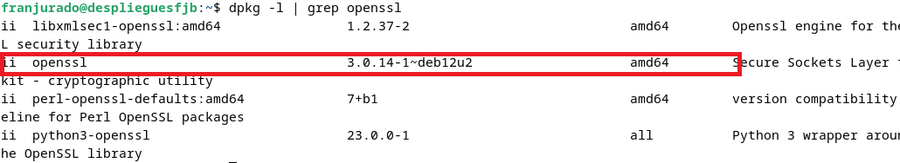
Y si no lo estuviera, se instala.
Creación de usuarios y contraseñas
Vamos a crear varios usuarios y contraseñas para el acceso web a nuestra página web. Para ello crearemos un archivo oculto llamado "./htpasswd" en el directorio de configuración /etc/nginx donde guardaremos nuestros usuarios y contraseñas:
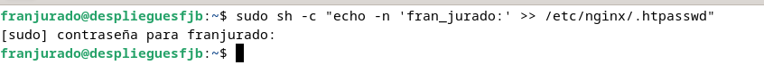
Crearemos un password cifrado para el usuario:
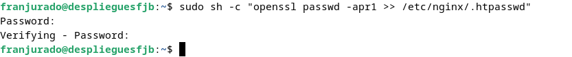
Nos pedirá verificarlas también.
Y con el comando cat podemos comprobar que nos lo ha almacenado correctamente:
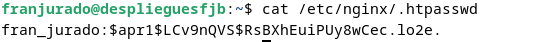
Haremos lo mismo y crearemos un usuario extra con mi nombre y otro con el apellido:
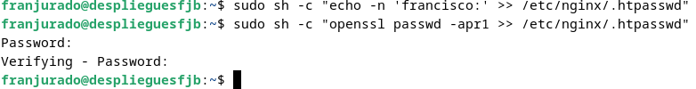
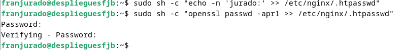
Y mostramos que todo ha ido correctamente con el siguiente comando: - cat /etc/nginx/.htpasswd
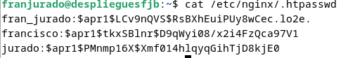
Configuración servidor Nginx
Ahora tenemos que editar la configuración básica del server block para aplicar la restricción de acceso.
Usaremos sudo nano /etc/nginx/sites-available/fjurado
Y añadimos las siguientes líneas:
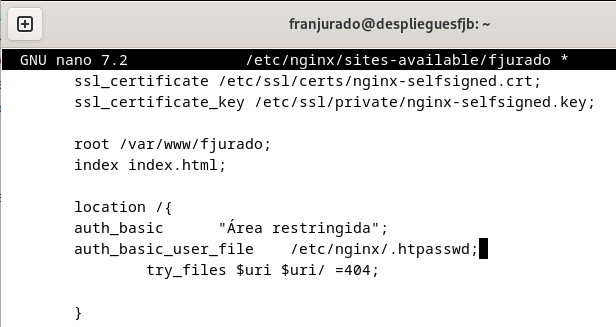
Y reiniciamos:
sudo systemctl restart nginx
Pruebas Nueva configuración
- COMPROBACIÓN 1:
Al entrar al sitio web, después de haber realizado todos los cambios de arriba, podremos comprobar que nos permite el acceso:
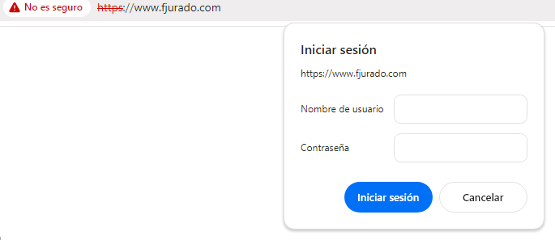
- COMPROBACIÓN 2:
Si cancelamos la autenticación en vez de introducir los datos nos da el siguiente error:
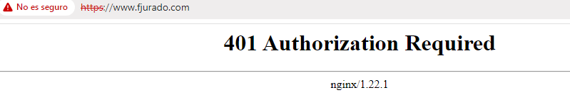
Tareas
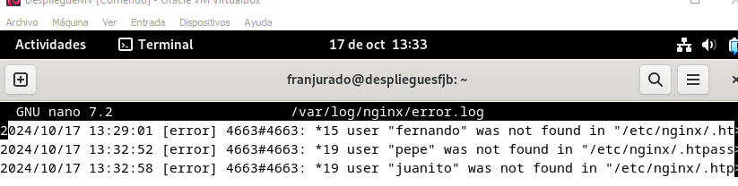
Vamos a intentar entrar usando el login equivocado, usando otros usuarios, y observamos que el log de error nos lo notifica.
A continuación vemos que el usuario válido nos lo notifica en el log:
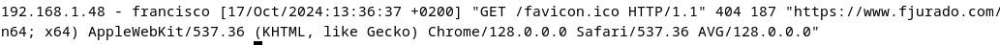
En la ruta sudo nano /etc/nginx/sites-available/nombre_web modificaremos algunos valores, añadiendo una nueva "location:
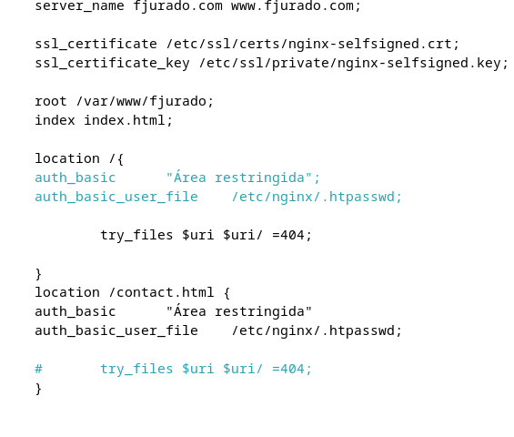
Vamos a usar ésta vez una ruta hacia contact.html , para de esa forma poder entrar al sitio web, pero que no se pueda acceder a dicha página salvo excepciones.
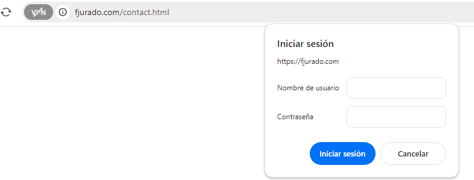
Nos pide login para dicha zona de nuestro sitio web. Hemos duplicado y modificado el index.html para realizar la práctca.
Y reiniciamos el servicio sudo systemctl restart nginx.
Combinación de la autenticación básica con la restriccion por IP
Tareas
- Tarea 1:
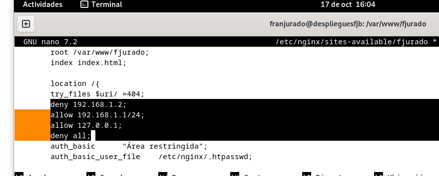
Entramos en el archivo de configuración y añadimos el "deny" para denegar el acceso a dicha IP, y el "allow" para permitir dichas IP's. También "deny all" para denegar el acceso al resto de IP's.
- Tarea 2: Ahora usamos nuestra ip de la máquina anfitriona y denegamos su acceso.
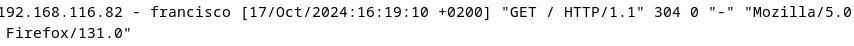
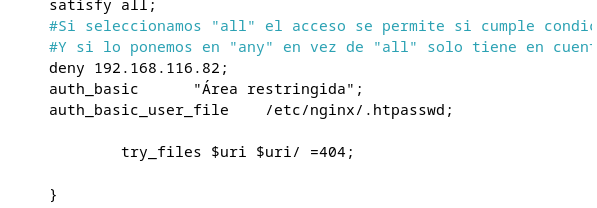
Y comprobamos que no podemos entrar.
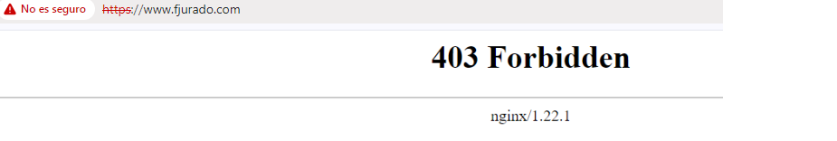
Para que sea necesaria tanto la IP como el login, deberemos usar
satisfy all
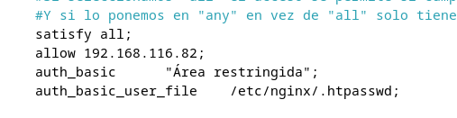
Cuestiones finales
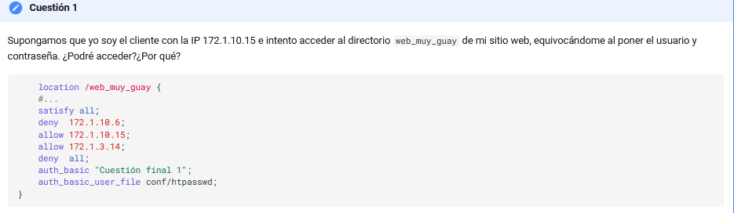
En este caso no se podría acceder porque al estar la opción de satisfy all, tanto ip como la introducción de usuario es obligatorio que se cumplan ambas condiciones.
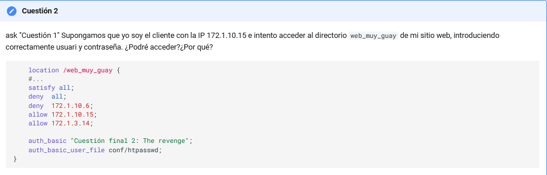
En este caso la opción "deny all" está más arriba que el allow correspondiente a la ip que intenta acceder, y da igual que se introduzca bien el usuario y contraseña, porque deniega todos los accesos.
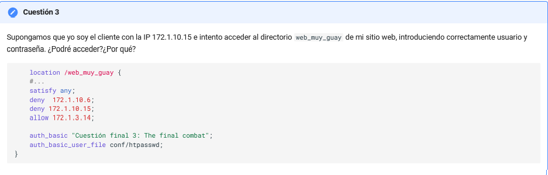
En este caso sí que se podrá acceder porque la opción "satisfy any" valora dos condiciones, ip correcta e introducción de usuario y contraseña, y aunque la ip se deniegue la correcta introducción del login prevalece por encima.
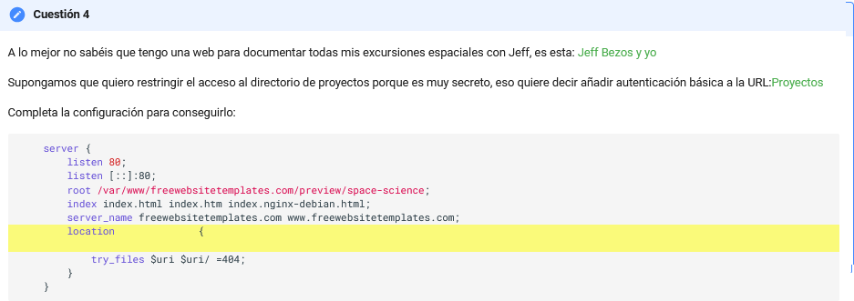
Crearíamos un usuario o los que quisiéramos y usaríamos el siguiente código:
location / { try_files $uri $uri/ =404; }
location /Proyectos { auth_basic "Área restringida - Proyectos"; auth_basic_user_file /etc/nginx/conf.d/htpasswd_proyectos; }
Aquí se configura el acceso restringido para el directorio /Proyectos usando la autenticación básica con un archivo de contraseñas (htpasswd). Así solo quienes tengan el usuario y la contraseña correcta podrán acceder a /Proyectos.